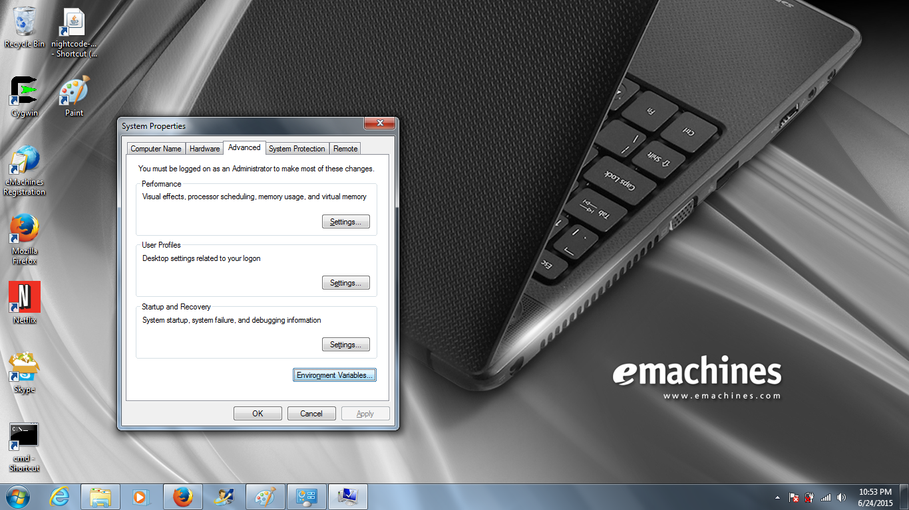
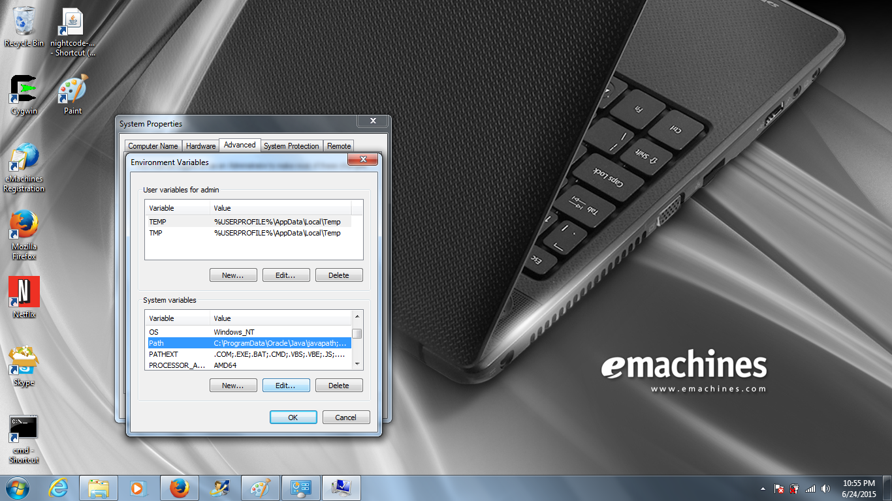
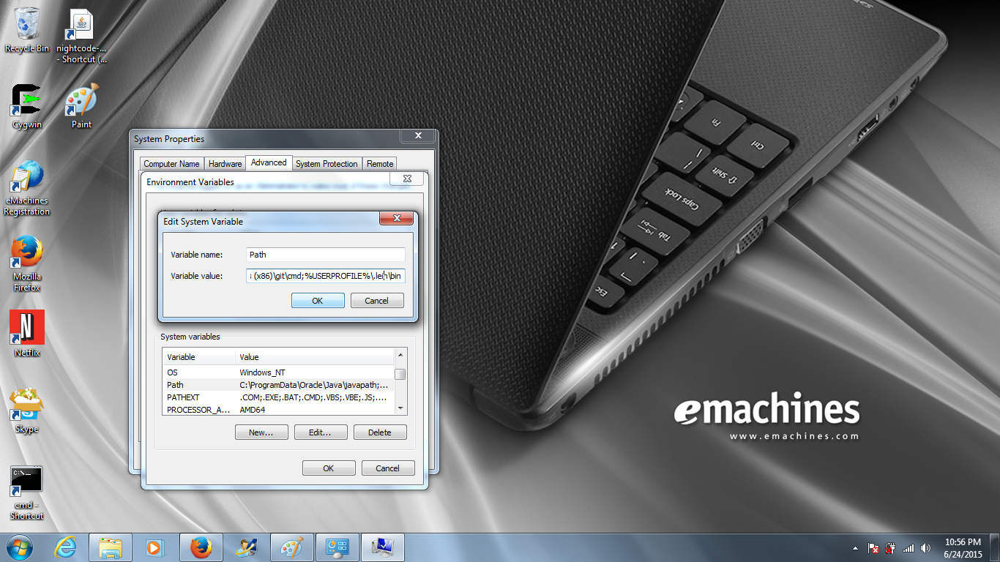
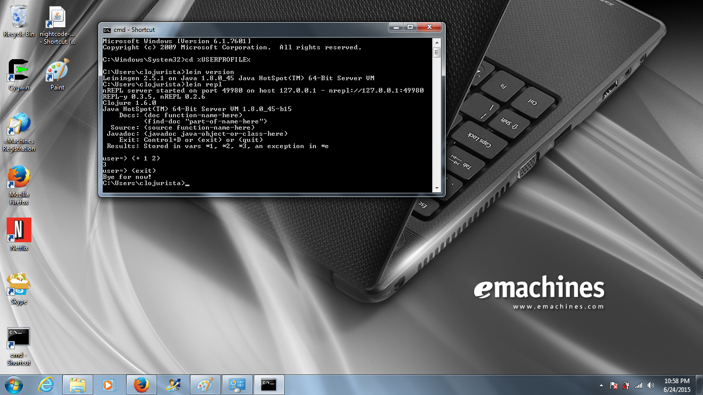

Install Leiningen¶
Go to the...
- prev section Install Java
- new Setup instructions
- next section Getting Started with Heroku
Download Leiningen for Windows¶
For Windows there is a special installer:
http://leiningen-win-installer.djpowell.net/
We want to make sure that the lein command is accessible
anywhere so we’ll add it to the PATH environment variable.
On Windows you can go to System Properties | Advanced | Environment Variables
NOTE: see these alternate notes on setting the Windows PATH: note 1, note 2)

Next find the Path variable:

Now add the directory for lein to the Path
Note the previous entry should end with a semicolon (‘;’). If there isn’t already a semicolon add one now.
Then add the path to the Leiningen program %USERPROFILE%\.lein\bin

Download Leiningen for Mac or Linux¶
For Mac and Linux you can download the lein script:
clojurista@mylaptop $ mkdir ~/bin
clojurista@mylaptop $ cd ~/bin
clojurista@mylaptop $ curl -O https://raw.githubusercontent.com/technomancy/leiningen/stable/bin/lein
clojurista@mylaptop $ chmod +x lein
clojurista@mylaptop $ cd ..
clojurista@mylaptop $ echo 'export PATH=$PATH:$HOME/bin' > .profile
clojurista@mylaptop $ . .profile
Test Leiningen (all platforms)¶
Now you can change directories back to your HOME directory
and verify that lein is in your path by typing:
lein version
You should see the version of Leiningen (and Java) print out.
Now you can type lein repl to start a simple Clojure REPL.
You can enter a simple addition (+ 1 2).
Finally type (exit) to return to the command line prompt:
